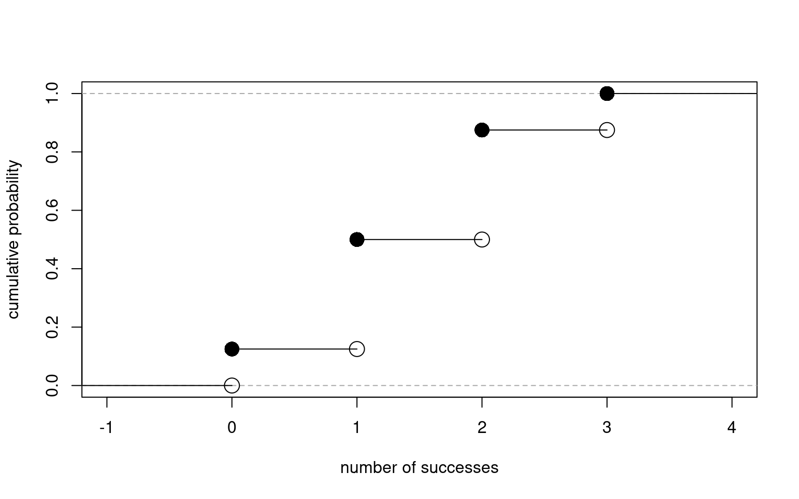
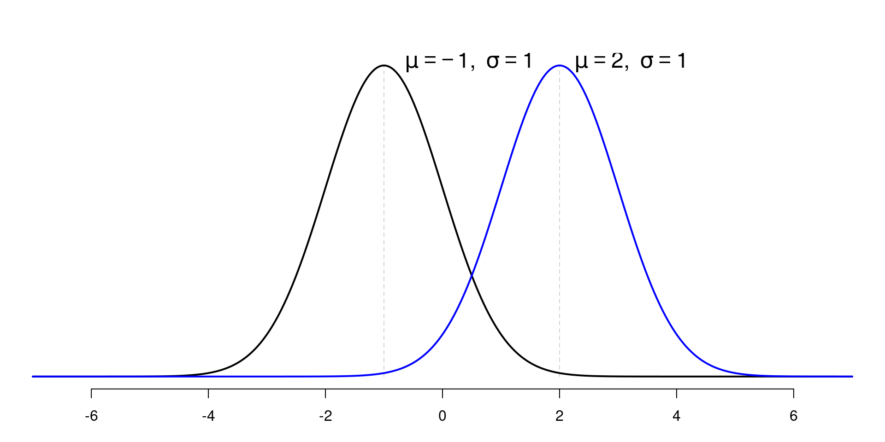

[1] 0.001291758Medical Statistics
Important Probability Distributions
Boncho Ku, Ph.D. in Statistics ![]()
Korea Institute of Oriental Medicine (KIOM)
Korea Institute of Oriental Medicine
Important Discrete Distribution
Bernoulli Trial
Definition
A random experiment in which there are only two possible outcomes
Example
- Tossing a coin: Head (H) or Tail (T)
- Take an exam: Success (S) or Failure (F)
- True (T) or False (F)
Let \(X:\{S,F\} \rightarrow \{0,1\}\), that is
\[X = \begin{cases} 1~~~~~\mathrm{if~the~outcome~is~S}\\ 0~~~~~\mathrm{if~the~outcome~is~F}\\ \end{cases}\]
Let \(p\) be the probability of success, then the p.m.f of \(X\) is
\[ f_X(x) = p^x(1-p)^{1-x}, x = \{0, 1\} \]
\[ E(X) = p, ~~ Var(X) = \sigma^2 = p(1-p) \]
Binomial Distribution
The Binomial distribution has three defining properties:
Important
- Bernoulli trials are conducted \(n\) times
- The trials are independent
- The probability of success \(p\) does not change between trials
Definition
If \(X\) counts the number of successes in the \(n\) independent Bernoulli trials, we say that \(X\) has a binomial distribution with the p.m.f
\[ P(X = x) = f_X(x) = \binom{n}{k} p^x (1-p)^{n-x}, x=\{0, 1, \ldots, n\} \]
We write
\[ X \sim \mathrm{binom}(\mathrm{size} = n,~~\mathrm{prob} = p) \]
Binomial Distribution
Important
The total number of successes is identical to the sum of \(n\) Bernoulli trials.
\[ \sum_{x=0}^{n}\binom{n}{x} p^x (1-p)^{n-x} = [p + (1-p)]^{n} = 1 \]
\[\begin{aligned} \mu & = \sum_{x=0}^{n}\binom{n}{x}p^{x}(1-p)^{n-x} \\ & = \sum_{x=1}^{n}x\frac{n!}{x!(n-x)!}p^{x}(1-p)^{n-x} \\ & = n\cdot p\sum_{x=1}^{n}\frac{(n-1)!}{(x-1)!(n-x)!}p^{x-1}(1-p)^{n-x} \\ & = n\cdot p\sum_{x-1=0}^{n-1}\binom{n-1}{x-1}p^{x-1}(1-p)^{(n-1)-(x-1)} \\ & = np \end{aligned}\]
\[\begin{aligned} \sigma^2 &= E[X^2] - [E(X)]^2 \\ &= \sum_{x=0}^{n}x^2\binom{n}{x}p^{x}(1-p)^{n-x} - (np)^2 \\ &= \sum_{x=1}^{n}x^2\binom{n}{x}p^{x}(1-p)^{n-x} - (np)^2 \\ &= \sum_{x=1}^{n}x\cdot x \frac{n(n-1)!}{x(x-1)!(n-x)!}p^{x}(1-p)^{n-x} -(np)^2 \\ &= np\sum_{x-1=0}^{n-1}x\binom{n-1}{x-1}p^{x-1}(1-p)^{(n-1)-(x-1)} - (np)^2 \end{aligned}\]
Continued from (1)
Let \(y=x-1\) and \(m=n-1\), then
\[\begin{aligned} \sigma^2 &= np\sum_{y=0}^{n-1}(y+1)\binom{m}{y}p^{x-1}(1-p)^{m-y} -(np)^2\\ &= np\{(n-1)p + 1\} - (np)^2 = (np)^2 + np(1-p) - (np)^2 \\ &= np(1-p) \end{aligned}\]
Let \(X_{i} \sim Bernoulli(p)\) then \(Y=\sum_{i=1}^{n}X_i \sim \mathrm{binom}(n, p)\). Therefore,
\[\begin{aligned} \mu_{Y} &= E(Y) = E\left(\sum_{i=1}^{n}X_{i}\right) = \sum_{i=1}^{n}E(X_i) = \sum_{i=1}^{n}p = np \\ \sigma_{Y}^{2} &= Var(Y)=Var\left(\sum_{i=1}^{n}X_{i}\right) = \sum_{i=1}^{n}Var(X_i) \\ &= \sum_{i=1}^{n}p(1-p) = np(1-p)~\because~X_{i} \perp X_{j} \end{aligned}\]
Binomial Distribution
Example
Roll 12 dice simultaneously, and let \(X\) denote the number of s appear. We wish to find the probability of getting seven, eight, or nine s.
Let \(S\) be an event that we get a on one roll. Then \(P(S)=1/6\) and the rolls constitute Bernoulli trials; \(X \sim \mathrm{binom}(\mathrm{size}=12, \mathrm{prob} = 1/6)\) and we are asking to find \(P(7\leq X\leq 9)\). That is,
\[ P(7\leq X\leq 9) = \sum_{x=7}^{9}\binom{12}{x}\left(\frac{1}{6}\right)^x\left(\frac{5}{6}\right)^{12-x} \] Alternative
\[ P(7\leq X\leq 9) = P(X \leq 9) - P(X \leq 6) = F_X(9) - F_X(6) \]
where \(F_X(x)\) is the CDF of \(X\).
Binomial Distribution
Example (CDF)
Toss a coin 3 times and let \(X\) be the number of Heads observed. Then
\[ X \sim \mathrm{binom}(\mathrm{size} = 3, \mathrm{prob} = 1/2) \]
The PMF:
| \(x=\#~\mathrm{of~Heads}\) | 0 | 1 | 2 | 3 |
|---|---|---|---|---|
| \(f(x)=P(X=x)\) | 1/8 | 3/8 | 3/8 | 1/8 |
\[F_{X}(x) = P(X \leq x) = \begin{cases} 0, ~~~~~~~~~~~~~~~~~~~~~~x < 0\\ \frac{1}{8},~~~~~~~~~~~~~~~~~~~~~ 0\leq x < 1\\ \frac{1}{8} + \frac{3}{8} = \frac{4}{8},~~~~~ 1\leq x < 2\\ \frac{4}{8} + \frac{3}{8} = \frac{7}{8},~~~~~ 2\leq x < 3\\ 1 ~~~~~~~~~~~~~~~~~~~~~~~~x \geq 3\\ \end{cases}\]
n <- 3; p <- 0.5
x <- -1:(n+1)
y <- pbinom(x, size = n, p = p)
plot(x, y, type = "n",
xlab = "number of successes",
ylab = "cumulative probability")
abline(h=1, lty=2, col = "darkgray")
abline(h=0, lty=2, col = "darkgray")
points(x[2:5], y[2:5], pch=16, cex = 2)
points(x[2:5], y[1:4], pch=21, cex = 2)
segments(
x0 = c(-2, 0, 1, 2, 3),
x1 = c( 0, 1, 2, 3, 5),
y0 = c(y[1], y[2], y[3], y[4], y[5]),
y1 = c(y[1], y[2], y[3], y[4], y[5])
)
Hypergeometric Distribution
Example
Suppose that an urn contains 7 white balls and 5 black balls. Let our random experiment be to randomly select 4 balls, without replacement, from the urn. Then the probability of observing 3 white balls(and thus 1 black ball) is
\[ P(3W, 1B) = \frac{\binom{7}{3}\binom{5}{1}}{\binom{12}{4}} \]
- Sample 4 times (\(=K\)) without replacement \(\rightarrow\) a sample from POPULATION
- From where?? \(\rightarrow\) an urn with 7 white balls (\(=M\)) and 5 black balls (\(=N\))
Definition
Let \(X\) be the number of success in \(K\) samples obtained from a total of \(N\) successes and \(M\) failures, the PMF of \(X\) is
\[ P(X=x) = f_{X}(x) = \frac{\binom{M}{x}\binom{N}{K-x}}{\binom{M+N}{K}}, ~~~0\leq x \leq M,~0\leq K-x \leq N \]
Hypergeometric Distribution
Expectation
\[ \mu_X=E(X)=K\frac{M}{M+N} \]
Variance
\[ \sigma_{X}^2=Var(X)=K\frac{MN}{(M+N)^2}\frac{M+N-K}{M+N-1} \]
Example
Suppose that a city with \(N\) women and \(M\) men.
- \(X\): the number of women infected with the disease
- \(Y\): the number ofmen infected with the disease
Our goal is to estimate the probability that a person infected with the disease is women. Let \(p_X\) and \(p_Y\) denote probabilities of infection. Assume that \(p = p_X = p_Y\)
| Women | Men | Total | |
|---|---|---|---|
| Infection: Yes | \(X\) | \(Y\) | \(X+Y\) |
| Infection: No | \(N-X\) | \(M-Y\) | \((N+M)-(X+Y)\) |
| Total | \(N\) | \(M\) | \(N+M\) |
Hypergeometric Distribution
Example (continued)
Then \(X\sim \mathrm{binom}(\mathrm{size}=N, \mathrm{prob}=p)\), \(Y\sim \mathrm{binom}(\mathrm{size}=M, \mathrm{prob}=p)\). Thus,
\[ (X+Y) \sim \mathrm{binom}(\mathrm{size}=N+M, \mathrm{prob} = p)~~\because X\perp Y \] Our purpose is to find
\[ P(X=x|X+Y) = \frac{P(X+Y|X=x)P(X=x)}{P(X+Y)}~~\because \mathrm{Bayes~Theorem} \] Let \(X+Y=K\)
\[\begin{aligned} P(X=x|X+Y) &= \frac{P(Y=K-X|X=x)P(X=x)}{P(X+Y=K)} \\ &= \frac{P(Y=K-X)P(X=x)}{P(X+Y=K)}~~\because X\perp Y \\ &= \frac{\binom{M}{K-X}p^{K-X}(1-p)^{M-K+X} \binom{N}{X}p^X(1-p)^{N-X}}{\binom{N+M}{K} p^K(1-p)^{N+M-K}} \\ &= \frac{\binom{M}{K-X}\binom{N}{X}}{\binom{N+M}{K}} \sim \mathrm{Hyper}(M, N, K) \end{aligned}\]
Hypergeometric Distribution
Relationship to Binomial Distribution
The conditional distribution of \(X\) given \(X+Y=K\) is identical to hypergeometric distribution.
When \(N \rightarrow \infty\), the hypergeometric distribution converges to the binomial distribution.
Important
Binomial distribution \(\rightarrow\) with replacement
Hypergeometric distribution \(\rightarrow\) without replacement
Poisson Distribution
Motivation
How do we measure the probability of a given number of events occurring in a fixed interval of time or space?
Examples
- Call center: number of calls per hour within a day
- Traffic accident: number of traffic accidents during 7:00 AM to 10:00 AM per day
- Number of customers arriving in a bank between 9:00 AM and 11:00 AM
Assumption
- The events occurs independently (independence)
- The events occurs with a known constant mean rate (consistency)
- The probability of two events occurring in a very short time and very small space is 0 (non-clustering)
Poisson Distribution
Definition
Let \(\lambda\) (\(\lambda > 0\)) be the average number of events in the time interval \([0,1]\). Let the discrete random variable \(X\) count the number of events occuring in the interval.
\[ f_X(x) = P(X=x) = \frac{\lambda^x\exp(-\lambda)}{x!}, ~~~x = 0,1,2,\ldots \]
We write \(X \sim \mathrm{pois}(\mathrm{lambda} = \lambda)\)
If \(X\) counts the number of events in the interval \([0, t]\) and \(\lambda\) is the average number of occurance in unit time,
\[ f_X(x) = P(X=x) = \frac{(\lambda t)^x\exp(-\lambda t)}{x!}, ~~~x = 0,1,2,\ldots \]
Poisson Distribution
\[ E(X) = \sum_{x=0}^{\infty}x \frac{\lambda^x\exp(-\lambda)}{x!} = \sum_{x=0}^{\infty} \lambda \frac{\lambda^{(x-1)}\exp(-\lambda)}{(x-1)!} = \lambda \]
\[ Var(X) = \sum_{x=0}^{\infty}x^2 \frac{\lambda^x\exp(-\lambda)}{x!} = \sum_{x=0}^{\infty} \lambda^2 \frac{\lambda^{(x-2)}\exp(-\lambda)}{(x-2)!} = \lambda^2 \]
Shapes of Poisson Distribution according to \(\lambda\)
Poisson Distribution
Example 1
On the average, 5 cars arrive at a particular car wash every hour. Let \(X\) count the number of cars that arrive from 10 AM to 11 AM. What is the probability that no car arrives during this period?
Example 2
Suppose the car wash above is in operation from 8 AM to 6 PM, and we let \(Y\) be the number of customers that appear in this period. What is the probability that there are between 48 and 50 customers, inclusive?
Since \(X \sim \mathrm{pois}(\lambda = 5)\), the probability that no car arrives is
\[ P(X = 0) = \frac{5^0\exp(-5)}{0!} = \exp(-5) \approx 0.0067 \]
scripts for the solution
The average car arrivals during 8 AM to 6 PM is \(\lambda'=5\times10=50\), \(Y\sim \mathrm{pois}(\lambda = \lambda'=50)\). The probability between 48 to 50 customers:
\[ P(48 \leq Y \leq 50) = \sum_{y=0}^{50}\frac{50^{y}\exp(-50)}{y!} - \sum_{y=0}^{47}\frac{50^{y}\exp(-50)}{y!} \approx 0.168 \]
scripts for the solution
Poisson Distribution
Relationship to Binomial Distribution
Suppose \(X\) and \(Y\) are Poisson random variables: \(X\sim \mathrm{pois}(\lambda_1)\), \(Y\sim \mathrm{pois}(\lambda_2)\) and \(X\) and \(Y\) are independent, then \((X+Y)\sim \mathrm{pois}(\lambda_{1} + \lambda_{2})\). The conditional distribution of \(X\) given with \((X+Y) = N\) is identical to the binomial distribution with size of \(N\) and probability of \(p=\lambda_1/(\lambda_1 + \lambda_2)\).
Proof
By using Bayes Theorem,
\[ P(X|X+Y = N) = \frac{P(X+Y=N|X=x)P(X=x)}{P(X+Y = N)} \]
Since \(X \perp Y\), \(Y=X-N\),
\[ P(X|X+Y = N) = \frac{P(Y=N-X)P(X=x)}{P(X+Y = N)}=\frac{\frac{\exp(-\lambda_2)\lambda_2^{N-x}}{(N-x)!}\frac{\exp{(-\lambda_1)}\lambda_1^{x}}{x!}}{\frac{\exp[-(\lambda_1+\lambda_2)](\lambda_1+\lambda_2)^N}{N!}} \]
Poisson Distribution
Proof (continued)
\[\begin{aligned} P(X|X+Y = N) &= \frac{N!}{x!(N-x)!}\frac{\exp{[-(\lambda_1+\lambda_2)]}\lambda_1^x\lambda_2^{N-x}}{\exp{[-(\lambda_1+\lambda_2)]}(\lambda_1+\lambda_2)^N} \\ &= \binom{N}{x}\frac{\lambda_1^x\lambda_2^{N-x}}{(\lambda_1 + \lambda_2)^N} = \binom{N}{x}\frac{\lambda_1^x\lambda_2^{N-x}}{(\lambda_1 + \lambda_2)^x(\lambda_1 + \lambda_2)^{N-x}} \\ &= \binom{N}{x}\left(\frac{\lambda_1}{\lambda_1+\lambda_2}\right)^x\left(1-\frac{\lambda_1}{\lambda_1+\lambda_2}\right)^{N-x} \\ &= \mathrm{binom}\left(\mathrm{size}=N, \mathrm{prob}=\frac{\lambda_1}{\lambda_1+\lambda_2}\right) \end{aligned}\]
Important
The conditional distribution of \(X\) given \(X+Y\) is identical to the binomial distribution, where \(X\sim \mathrm{pois}(\lambda_1)\) and \(Y\sim \mathrm{pois}(\lambda_2)\)
(Check) The binomial distribution is converge to the poisson distribution when \(N\rightarrow \infty\)
Important Continuous Distributions
Uniform Distribution
Definition
When a random variable \(X\) with identical probability over every interval on \([a,b]\), it is called a uniform distribution
We write \(X \sim U(a, b)\) or \(X\sim \mathrm{unif}(\mathrm{min} = a, \mathrm{max}=b)\)
\[f_X(x) = \begin{cases} \frac{1}{b-a},~~ a\leq x \leq b \\ 0, ~~~~~~~ \mathrm{otherwise} \end{cases}\]
\[F_X(x) = \begin{cases} 0, ~~~~~~~ x < a\\ \frac{x-a}{b-a}, ~~ a\leq x \leq b\\ 1, ~~~~~~~ x > b \end{cases}\]
\[\begin{aligned} \mu_X = E(X) &= \int_{-\infty}^{\infty} x f_X(x) dx \\ &= \int_{a}^{b} x \frac{1}{b-a} dx \\ &= \frac{1}{b-a}\frac{x^2}{2} \bigg|_{x=a}^{b} \\ &= \frac{b+a}{2} \end{aligned}\]
\[\begin{aligned} \sigma^2_X &= Var(X) = E\left[(X - E(X))^2\right] = E(X^2) - \left[E(X)\right]^2 \\ &= \int_{a}^{b} x^2 \frac{1}{b-a} dx - \left(\frac{b+a}{2}\right)^2 \\ &= \frac{1}{b-a}\frac{x^3}{3}\bigg|_{x=a}^{b} - \left(\frac{b+a}{2}\right)^2 = \frac{b^3-a^3}{3(b-a)} - \left(\frac{b+a}{2}\right)^2\\ &= \frac{(b-a)^2}{12} \end{aligned}\]
Uniform Distribution
Example
Suppose that buses arrive at a bus stop every 10 minutes and that the waiting time of a person who arrives at the stop is uniformly distributed. We want to find the probability that a person waits less than 5 minutes.
Solution
Let the waiting time for bus be a random variable \(X\), then \(X\) follows the uniform distribution with interval \([0, 10]\), Therefore,
\[ f_X(x) = P(X = x) =\frac{1}{10}, ~~ 0\leq x \leq 10 \]
The probability that a person waits less tan 5 minutes can be obtained
\[ P(X\leq 5) = \int_{0}^{5}\frac{1}{10} dx = \frac{1}{10}x\bigg|_{x=0}^{5} = 0.5 \]
Normal Distribution
The most IMPORTANT probability distribution in statistics
a.k.a Gaussian Distribution
Widely used to represent real-valued random variables whose distributions are unknown
Particularly, the normal distribution is a backbone of the central limit theorem (CLT)
\[ f_X(x; \mu, \sigma^2)=\frac{1}{\sigma\sqrt{2\pi}}\exp\left\{-\frac{(x-\mu)^2}{2\sigma^2}\right\},~~ -\infty < x < \infty \]
\[ \int_{-\infty}^{\infty} \frac{1}{\sigma\sqrt{2\pi}}\exp\left\{-\frac{(x-\mu)^2}{2\sigma^2}\right\} = 1 \]
\[\begin{aligned} \mu_X &=E(X) = \mu \\ \sigma^2_X &= Var(X) = \sigma^2 \end{aligned}\]
Normal Distribution
Shapes
- Bell shaped curve and symmetric around the \(\mu\)
- mean = median = mode
- Depends on \(\mu\) and \(\sigma\)
- Basic shape
- \(\mu_1=\mu_2\), \(\sigma_1 < \sigma_2\)
- \(\mu_1<\mu_2\), \(\sigma_1 = \sigma_2\)
- \(\mu_1<\mu_2\), \(\sigma_1 < \sigma_2\)

